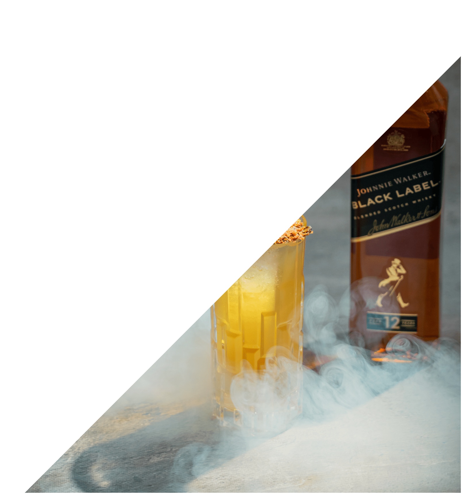

ZACZNIJ MIKSOWAĆ SWOJE ULUBIONE KOKTAJLE Z JOHNNIE WALKER!
SMAKOWAŁY CI KOKTAJLE W NASZEJ STERFIE PODCZAS WORLD CLASS 2023? CHCIAŁBYŚ MÓC CIESZYĆ SIĘ NIMI TAKŻE W DOMU, ALE NIE WIESZ JAK? MAMY DLA CIEBIE IDEALNE ROZWIĄZANIE. Z NASZĄ KOLEKCJĄ PRZEPISÓW MOŻESZ ZROBIĆ SWOJE JOHNNIE WALKER HIGHBALL DOMU. TERAZ MOŻESZ CIESZYĆ SIĘ TYMI SMAKAMI, KIEDY TYLKO CHCESZ!
JOHNNIE WALKER CREAMY HIGHBALL
SKŁADNIKI:
• 40ML JOHNNIE WALKER BLACK LABEL
• 150ML PIWA GUINNESS
• 10ML SYROPU WANILIOWEGO
• LÓD
SPOSÓB PRZYGOTOWANIA:
DO SZKLANKI WYPEŁNIONEJ LODEM WLEJ 40ML JOHNNIE WALKER BLACK LABEL, 150ML PIWA GUINNESS ORAZ 10ML SYROPU WANILIOWEGO. ZAMIESZAJ I UDEKORUJ SZCZYPTĄ CYNAMONU.
